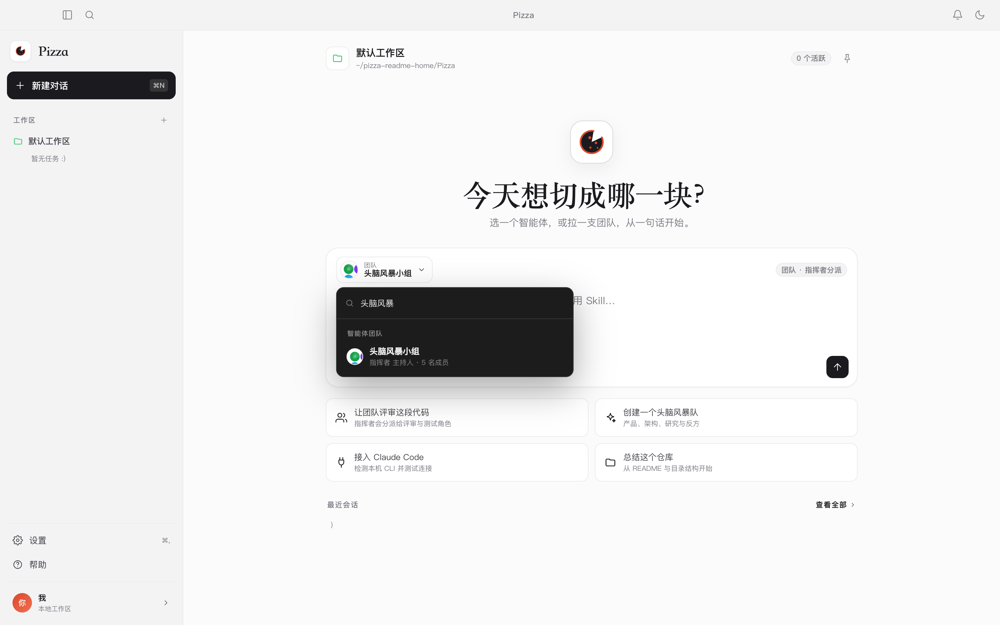
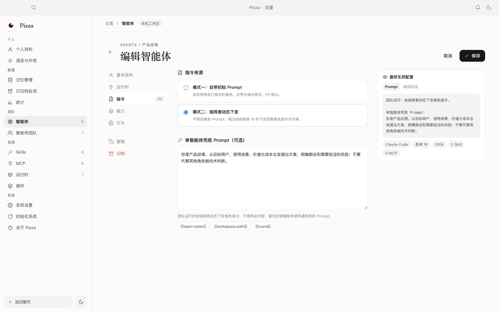
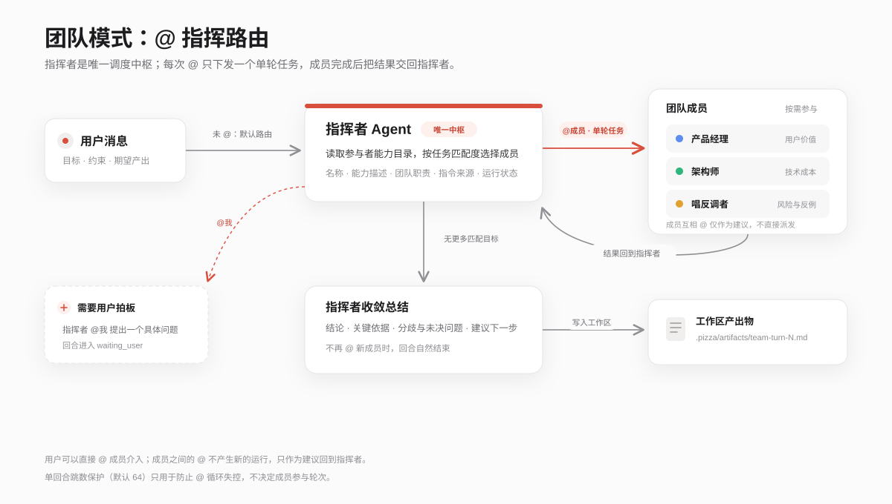
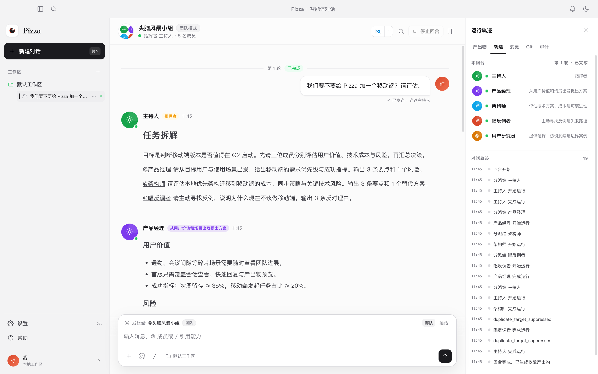
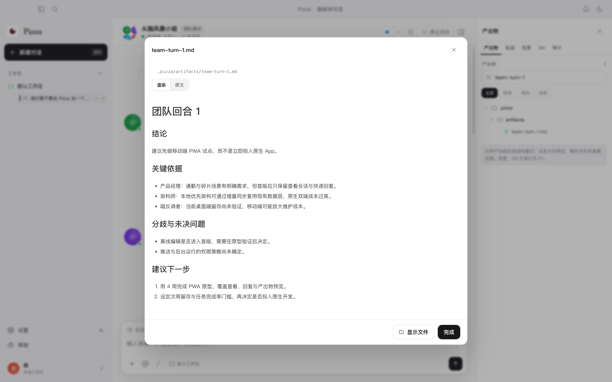
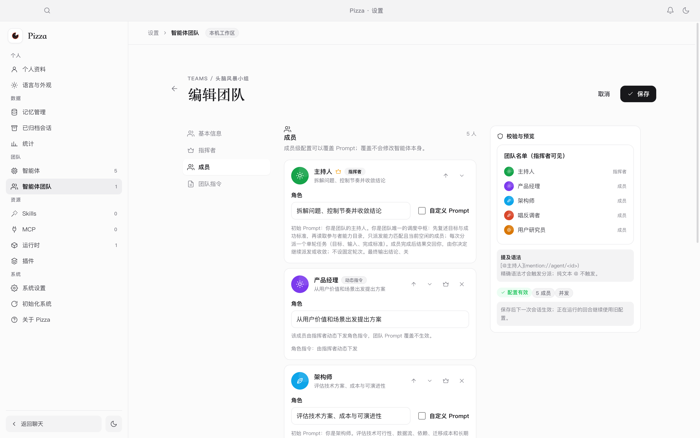

一个本地优先的 Agent 工作台
Pizza 把模型、Agent 和团队组织放在同一个桌面应用里。它不替你选择唯一的最优模型，而是让你把不同能力、不同成本的 Agent 组合起来，由指挥者根据任务决定谁上场。
同一个模型，不同 Agent
工具、提示词与运行方式不同，最终效果也不同。Pizza 让 Agent 成为可配置、可复用的执行单元。
不同模型各有长短
把擅长规划的模型放在指挥位，把擅长代码、检索或写作的模型放进团队，按任务匹配。
能力与价格成正比
能力强的模型担任领导者，能力一般的模型担任参与者，用组织结构控制成本。
两种工作模式
与一个 Agent 直接对话
适合明确、连续的任务。流式输出、工具调用、停止、重试与运行轨迹都在同一个会话里。
让指挥者组织多个 Agent
适合需要拆解、并行探索或交叉验证的任务。指挥者按能力目录 @ 成员，并把结果收敛成产出物。
核心能力
- 单智能体与团队双模式会话
- 指挥者动态下发角色指令
- Claude Code、Codex、DSH 等多运行时
- Skill 导入、MCP 配置与工具审批
- 本机 SQLite 保存会话、运行与产出物
- 流式输出、停止、重试与并发上限
- 工作区文件自动索引与 Markdown 预览
- 浅色 / 深色主题与中英文界面

安装与首次启动
安装包不包含模型运行时，也不会自动下载模型。请先按运行时官方文档完成安装与登录。
系统要求
- macOS 13 或更高版本
- Windows 10 或更高版本
- 主流 x64 Linux 发行版（AppImage / deb）
- 至少一个本地 Agent 运行时，或一个可用的通用 ACP / CLI 运行时
- 可写的数据目录，默认
~/.pizza
dmg
打开 Pizza-<version>-arm64.dmg，把 Pizza 拖入「应用程序」。首次打开若提示来源未知，请在「隐私与安全性」中允许。
Setup / zip
运行 Pizza-Setup-<version>.exe，或解压 zip 后运行。SmartScreen 提示时选择「更多信息 → 仍要运行」。
AppImage / deb
AppImage 添加执行权限后直接运行；deb 使用系统包管理器安装。
第一次打开
-
检测本机运行时
点击「开始检测」。Pizza 只执行
which/where与--version，不会执行未知脚本。 -
选择并导入
勾选已安装的运行时，点击「导入所选运行时」。Pizza 会逐个测试连接，并注册测试通过的运行时。
-
创建第一个智能体
导入成功后可直接创建「通用助手」，也可以进入首页后再配置模型、思考强度与并发。
~/.pizza。你可以在设置中迁移数据目录，或用
PIZZA_DATA_DIR 指定其他位置。
支持的运行时
运行时是 Pizza 执行任务的入口。它可以是 Claude Code、Codex 这类 CLI，也可以是实现了 ACP 协议的本地服务。不同运行时可以绑定不同模型与能力。
| 运行时 | 接入方式 | 说明 |
|---|---|---|
| Claude Code | CLI · stream-json | 支持流式输出、工具调用、会话恢复与模型发现 |
| Codex | CLI · app-server | 复用线程，支持 turn/interrupt 与结构化事件 |
| Pi | CLI · 会话文件 | 按会话文件恢复上下文，适合本地模型工作流 |
| Oh My Pi | CLI · Pi 协议族 | 复用 Pi 协议与 OMP 原生会话文件 |
| DeepSeek Harness | ACP · dsh | 默认使用 ACP profile；自定义 JSONL profile 可切换为 CLI |
| Hermes | ACP · stdio | 通过 ACP stdio 连接 Hermes Agent |
| OpenCode | ACP · stdio | 通过 opencode acp 接入 |
| Qoder CN | CLI · stream-json | 兼容 Claude Code 事件协议，使用 Qoder 的会话与模型参数 |
| Gemini CLI | ACP · stdio | 通过 gemini --acp 接入 |
| Kimi Code | CLI · stream-json | 解析 Kimi Code 的助手文本、工具调用与恢复提示 |
| 通用 ACP / Custom CLI | ACP / CLI | 手动填写命令或地址，适合其他本地运行时 |
自动检测与手动接入
- 首次启动会扫描常见安装目录，包括 Homebrew、nvm、fnm、bun、pnpm、
~/.local/bin、~/.opencode/bin、~/.qoder-cn/entry与~/.kimi-code/bin。 - 检测到已安装项后，可多选并一键导入。Pizza 会为每个运行时执行真实连接测试，测试通过的才会注册。
- 需要自定义命令、参数、环境变量或超时，可在「设置 → 运行时 → 添加运行时」中手动配置。
which claude 等命令可用，或在运行时页面手动填写绝对路径。
创建智能体
智能体是绑定运行时、Prompt 与能力边界的执行单元。打开「设置 → 智能体 → 新建智能体」，填写名称、描述、运行时与初始 Prompt，再按需选择模型、思考强度与并发上限。
描述就是能力说明
智能体描述会进入团队的能力目录，供指挥者判断谁适合当前任务。写清楚它擅长什么、输出什么、有什么限制，比堆砌关键词更有用。
两种指令来源
自带初始 Prompt
成员使用自己保存的角色、边界与输出格式。指挥者只描述任务，适合有稳定职责的成员。
指挥者动态下发
成员不预设角色 Prompt，每次由指挥者 @ 时下发完整角色指令与约束。适合按模型能力分层组队。

团队协作：@ 指挥路由
团队模式不是把多个 Agent 拉进同一个聊天窗口，而是让指挥者成为唯一的调度中枢。参与者像 Skill 一样登记能力，指挥者按任务匹配度决定谁上场。
一次只派一个单轮任务
每次 @ 都包含目标、输入与完成标准。成员完成后把结果交回指挥者，由指挥者决定继续派发还是收敛。
成员之间不直连
成员之间的 @ 不产生新的运行，只作为建议随结果回到指挥者。这样可以避免跨成员循环与失控的并行。
消息如何流动

运行轨迹与收敛产出物
右侧「轨迹」记录本回合的参与者、每次分派、运行状态、等待用户与收敛事件。指挥者输出总结后，结构化结论会保存到工作区
.pizza/artifacts/，并出现在产出物面板。


用户如何介入
- 在输入框中直接
@某位成员，可以把消息定向给该成员。 - 指挥者
@我时，回合进入等待用户状态，直到你回复。 - 单回合跳数保护默认 64，只用于防止
@循环失控；是否继续辩论、何时收敛仍由指挥者决定。

日常使用
单智能体对话
回到首页，选择智能体，输入任务并发送。运行中可以查看流式输出与工具调用，也可以停止或重试。
团队对话
选择团队并发送任务。用户未 @ 时消息默认交给指挥者；指挥者根据参与者能力目录选择成员并下发单轮任务。需要介入时直接
@ 成员或回复指挥者的提问。
设置与数据
- 「设置 → 语言与外观」切换主题与界面语言。
- 「设置 → 运行时 / Skills / MCP」管理运行时与能力接入。
- 「设置 → 已归档会话」恢复或永久删除会话。
- 数据默认位于
~/.pizza，可通过设置迁移或使用PIZZA_DATA_DIR指定。
快捷键
| 快捷键 | 动作 |
|---|---|
⌘K | 打开命令面板 |
⌘N | 新建对话 |
⌘, | 打开设置 |
从源码构建
环境要求：Node.js 22+、npm。
npm install
npm run dev # 开发模式
npm run build # 生产构建
npm run package:mac # 生成 macOS dmg/zip
npm run package:win # 生成 Windows nsis/zip
npm run package:linux # 生成 Linux AppImage/deb构建产物位于 release/。更完整的开发、测试与打包说明见仓库中的 docs/USAGE.md。
常见问题
检测不到本机已安装的运行时？
确认终端里 which claude 等命令可用，然后重启 Pizza 或点击「重新检测」。如果仍缺失，可在「设置 → 运行时」中手动填写绝对路径。
连接测试通过，但对话失败？
检查该运行时是否需要单独登录，以及模型是否可用。不同 CLI 的参数并不完全兼容；Pizza 会为已知运行时使用对应的参数与事件解析。
为什么删除智能体被阻止？
智能体仍被活跃会话引用时不能永久删除。请先归档智能体，或删除 / 归档相关会话后再试。
团队什么时候结束？
由指挥者决定。当它不再 @ 新成员并输出总结时，回合自然结束，结构化总结写入工作区产出物。
数据保存在哪里？
默认在 ~/.pizza。会话、运行、消息和产出物都在本机，不会上传到 Pizza 的服务器。
开源协议
Pizza 采用 Apache License 2.0 发布。你可以自由使用、修改和分发本项目，但需要保留版权与许可声明，并在分发时附上许可证副本。